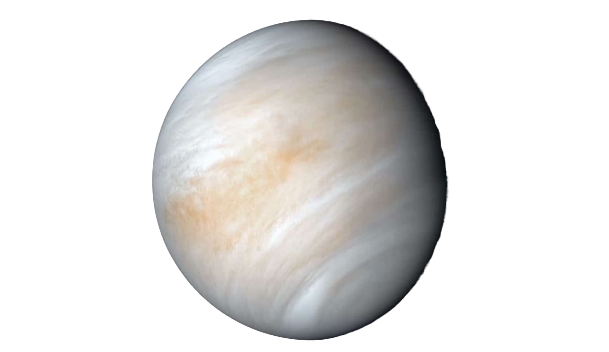
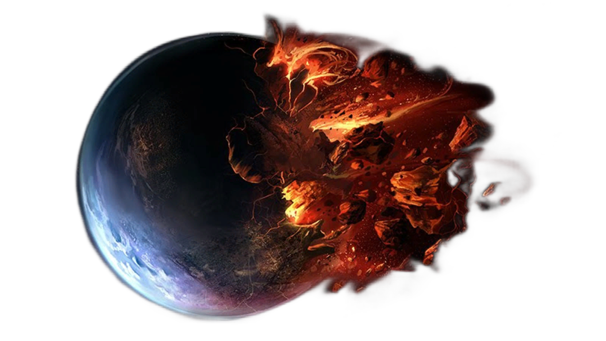
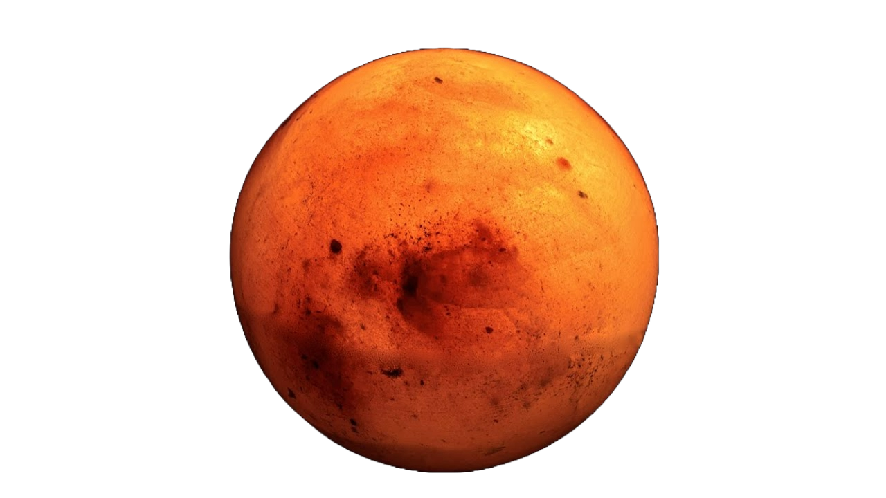
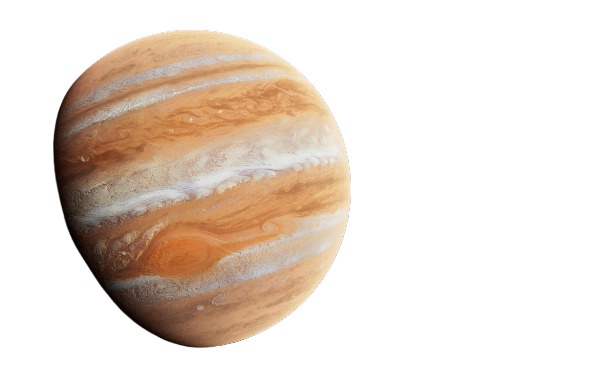
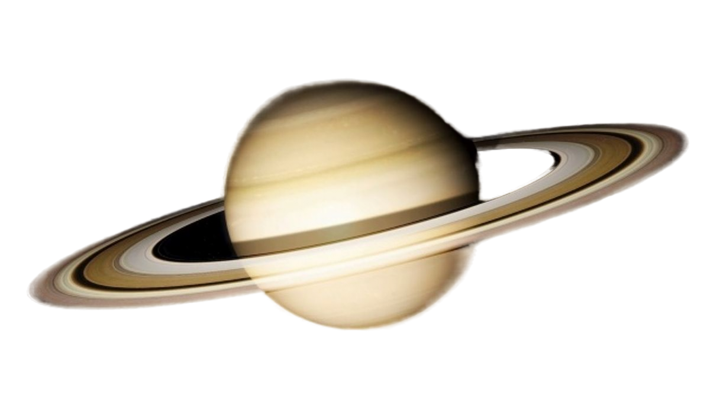

ВЕНЕРА
Адская кислотная баня (Пубертатная язва)
Температура: 462°C(для куры-гриль самое то)
Атмосфера: CO₂ с серной кислотой(После бати в туалете, противогаз взял?)

ЗЕМЛЯ
Единственное место, где есть пиво
На фото батя проиграл в танки
Температура: в норме 15°C
Спутник: Луна (Что сыр, забыл в космосе?)

МАРС
скебоб?: Красная пылевая пустыня..
Температура: От -153°C до +20°C (Как Апрель в Москве).
Есть лёд (но не для коктейлей).

Юпитер
Газовый гигант, клянись (в 11 раз больше Земли)
Температура: -145°C (Типичная Сибирь в НГ).
79 спутников (Ганимед — крупнее Меркурия).

Сатурн
Чё за покемон?: Газовый гигант с кольцами.
Температура: -178°C (Сибрь в Антарктиде?).
Лёгкий, как пенопласт (если б была ванна — плавал бы).
